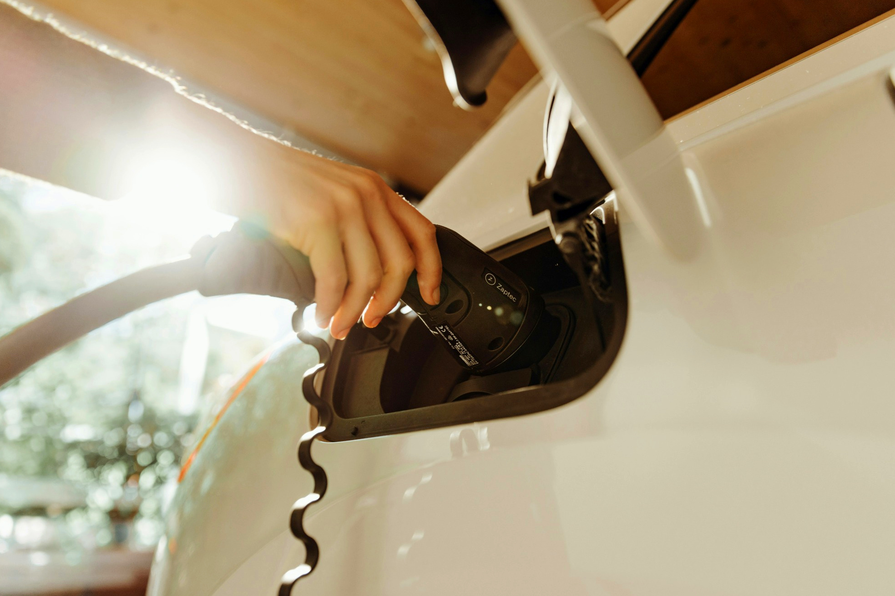

Electric Vehicles
Fast charge, high voltage, and wide-temperature reliability
EV cells require high energy density, long cycle life, fast charging, and wide-temperature reliability. Electrolyte and materials selection must control high-voltage stability, lithium plating risk, gas generation, impedance growth, and interphase degradation.
Technical Challenge
- High-voltage cathode stability and CEI control
- Fast-charge lithium plating risk
- Gas generation, swelling, and impedance growth
- Low-temperature charge and discharge performance
Winigen Support
- LiPF6, LiFSI, LiTFSI, and co-salt comparison
- Low-moisture solvents and additives
- Fast-charge and low-temperature electrolyte design
- Silicon-anode and lithium-metal formulation support